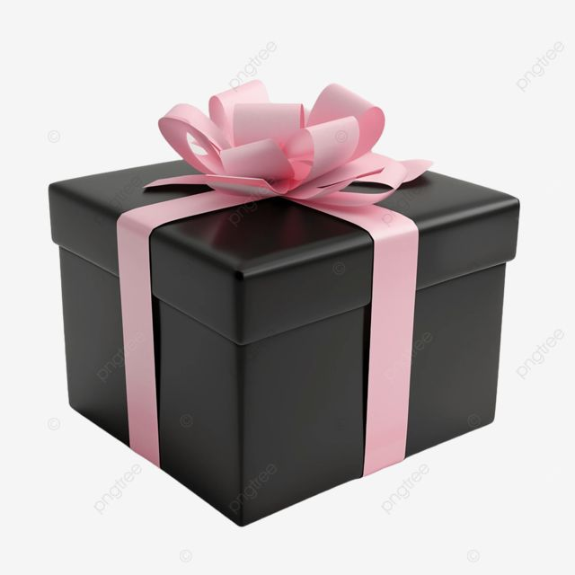
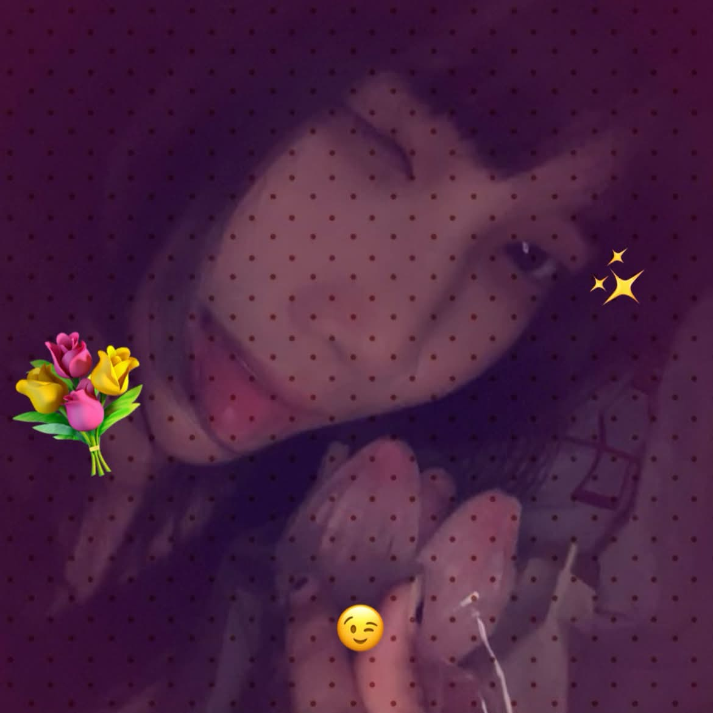
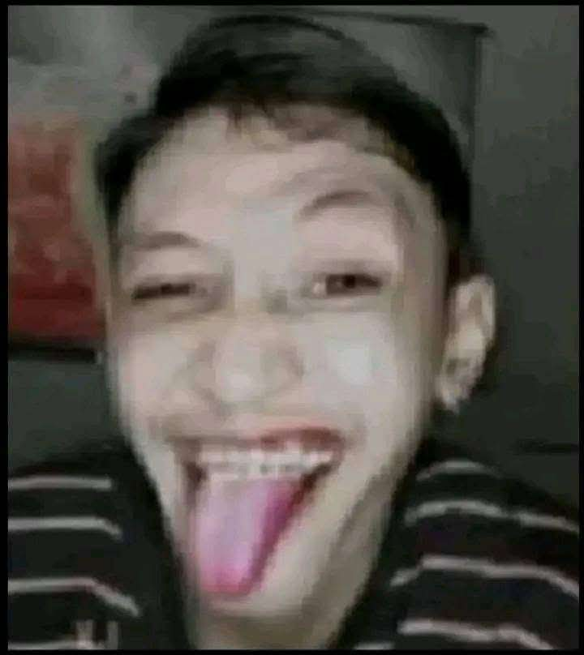

Something cute is waiting for you...
Tap the gift box to open it.


Click the photo to continue 💗

One more surprise for you...
Happy Birthday, Empz! 💗
Helloo helloo, a brightest day to uuu empzz its ur day :3 I hope this little website I created for u finds u well hehe.
To my dearestt empress liea albiz, lookk how've you grown so muchh, I love every versions of u even though I'm not there to watch u xD. Well its ur day today, its not just a regular day, and its not something to be brushed aside as just another year passing by, its the day you were born to and I am glad that you were born in this world, I am glad that I get to meet you andd anndd I am happy that I get to talk to u again;;
I'm genuinely thankful that our paths crossed. Even if I can't be there beside u to celebrate, I hope u know that I'm still cheering for u from wherever I am. I may not get to witness every little thing that happens in ur life, every achievement, every struggle, or every version of u as u grow, but I'll always be happy knowing that you're out there becoming the person you're meant to be. :((
I hope this new chapter of ur life brings u more reasons to smile, more memories to treasure, and more moments where u can look at urself and say, "I'm proud of how far I've come." I hope u learn to love urself even on the days when u don't feel like ur best, because u deserve the same kindness that u give to other people. And pleasee, don't be too hard on urself, okayy?? U don't have to have everything figured out right now. Take ur time, make mistakes, learn from them, and grow at ur own pace. There's no need to rush into becoming someone else when the person u are right now is already worth loving.
And empress, I hope u never forget how precious u are. Not just because it's ur birthday or because people are greeting u today, but because u matter even on ordinary days when nobody says it out loud. U deserve genuine happiness, people who choose to stay, and a kind of love that makes u feel safe being urself. I hope life becomes gentler with u, especially during the moments when things feel a little too heavy. And whenever u feel like ur not doing enough, I hope u remember that simply making it through another day is already something to be proud of.
Alsooo, don't think that ur getting older means u have to stop being silly or childish sometimes HAHAHAHA. PLEASEE STAY THE SAME LITTLE WEIRDO THAT I KNOW 😭😭. Keep laughing at random things, keep being excited over the little stuff, and keep that part of u that makes u, well, YOU. Growing up doesn't mean u have to lose the things that make u happy. So enjoy ur day, eat lots of good food, accept all the greetings and gifts, and don't u dare forget to treat urself special todayy. U deserve ittt. >:((
So happy birthday again, my dearestt empress Lieaaa. Thank u for existing, thank u for being u, and thank u for becoming someone I can genuinely say I'm glad to have met. I might not always be there to see every chapter of ur life unfold, but I'll always wish that each chapter treats u kindly. And no matter how much time passes or how much u grow, I hope a little part of u will always remember that someone out here is rooting for u and is happy that the world has u in it.
You've come this far, and I'm so proud of u. I'm proud of the person u are, the person u're becoming, and even the versions of u that are still figuring things out. There's still so much ahead of u, so many places to go, things to experience, and memories to make. I hope u get to experience a life that makes u excited to wake up every morning, and I hope u never lose hope in the good things that are yet to come.
I'm sorry if my messages to u are sometimes dry I just really don't know how to express myself towards u idkk haha, but y'know I'll always listen to u and be there anytime well if ever college caught up to me then I'll make it up to u if ever xD I'm really sorry I'm getting too awkward this days haaaaaa but um yeah happiest birthday to uuu emps^^, again I'm really glad that you were born^^
I love uuu, empresszz. Enjoy ur special day to the fullest, okayyy?? Don't forget to smile, take lots of pictures, and make memories that you'll look back on someday. U deserve all the happiness in this world and moreee. HAPPY BIRTHDAYYYY, EMPPPZZZ!!
With lots of love, 💗
Yashi ♡